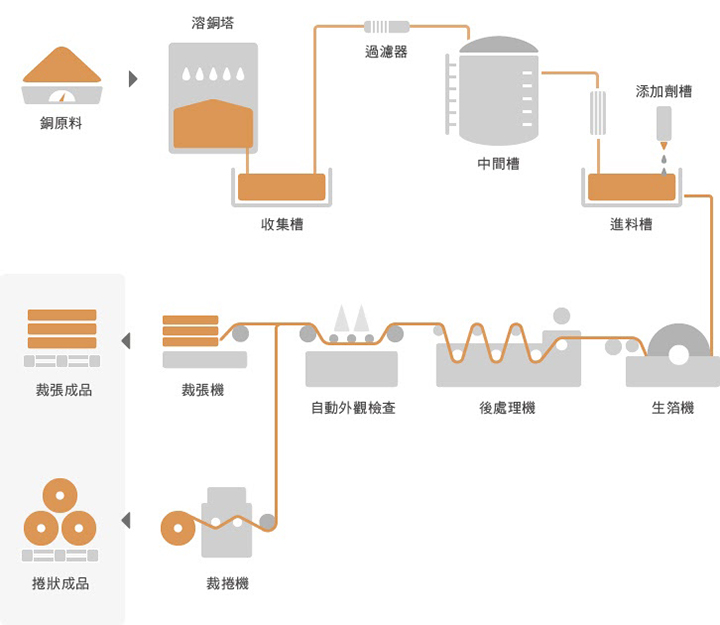
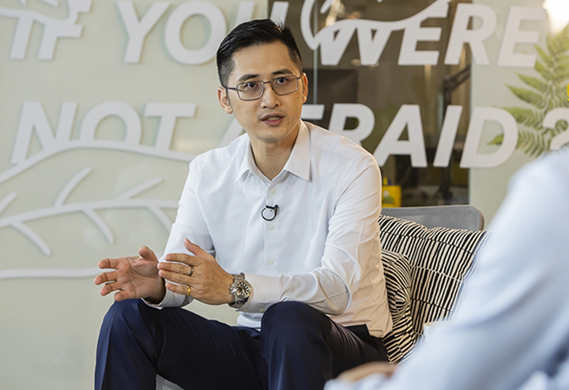
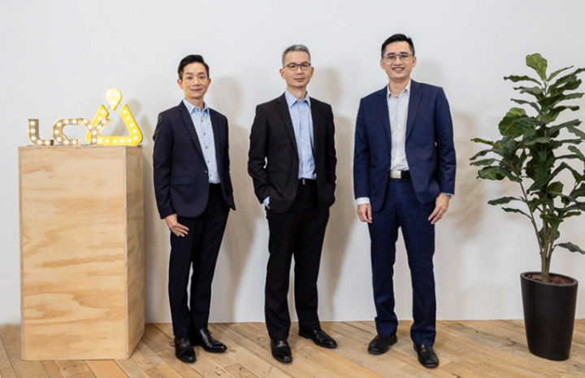

李長榮、 REnato Lab落實循環經濟圈與地球共好
為達成零氣候影響，蘋果承諾2030年要讓所有產品都實現碳中和、高科技產業也更重視資源永續。台灣化工材料大廠李長榮化工、李長榮科技，與環保材質研發與應用公司REnato Lab寰陞國際，正致力透過循環經濟來尋找資源最佳解。
全球經濟發展近50年來，人們對於物質的需求增加了兩倍，但資源有限、原料取得的成本也越來越高；同時，製程中所耗用的能源，也產生額外的二氧化碳，讓氣候變遷加劇。台灣化工材料大廠李長榮化工與子公司李長榮科技，以及環保材質研發與應用公司REnato Lab寰陞國際，各別從上游材料端、末端使用端來實踐循環經濟的力量，試圖減緩資源缺乏和氣候變遷的衝擊。
響應碳中和 李長榮EIPA雙循環扮要角
「廢棄物管理、氣候變遷是半導體製程的重大挑戰。」李長榮化工電子材料事業處副總經理陳立言強調，半導體高階製程愈趨複雜與精細，對於晶圓清潔的要求增加，純水、化學溶劑的使用量上升，產出的廢棄物也隨之成長，廢棄物管理也成為重要議題，因此製程中的每一個環節都一定要考量資源如何永續利用，以減少對環境的衝擊。
 李長榮化工的電子級異丙醇（EIPA）雙循環是是全球唯一可將半導體製程清洗廢液轉製恢復為電子級異丙醇的技術｜李長榮化工
李長榮化工的電子級異丙醇（EIPA）雙循環是是全球唯一可將半導體製程清洗廢液轉製恢復為電子級異丙醇的技術｜李長榮化工
李長榮化工製程創新技術—電子級異丙醇（EIPA）雙循環是是全球唯一可將半導體製程清洗廢液轉製為電子級異丙醇的技術，它的第一個循環，是回收客戶端使用後的晶圓清洗EIPA廢液，在李長榮化工廠內經過分離過濾，回收再製為同級異丙醇，使其再次回到客戶廠中。
第二個循環，是半導體製程廢液中分離出來的水，透過李長榮化工的MBR膜生物反應器，利用中空纖維膜絲表面具有大量直徑0.05微米的孔隙，過濾廢水中的雜質與污染，將水資源回收作為製程冷卻水使用，回收的再生水，更應用在林園區的生物處理池中，甚至還可以養魚。陳立言補充，EIPA未來也將前進美國亞利桑納州籌建生產基地，發揮更大影響力。
「李長榮EIPA雙循環系統就是產業上下游共同合作的指標案例，實現水和化學品零廢棄，打造資源封閉循環，解決半導體產業面臨的廢棄物與水資源缺乏的議題。」REnato Lab寰陞國際執行長王家祥認為，循環經濟最高境界是產業價值鏈共同合作，一起思考如何讓資源有效利用，讓資源從線性使用變成封閉無限循環。
榮科綠色銅箔 攜手科技業夥伴為地球找解方
材料技術持續進步，改善人類便利性，所有日常頻繁使用的汽車、手機、電腦等物品，都出自於材料產業的貢獻。但地球資源有限、原料取得的成本也愈來愈高，高科技材料的回收與再利用技術，也正面臨極大挑戰。「在產品生命週期的所有階段盡可能地減少產品對環境的影響，包括廢棄物管理，處置、回收和再利用。」李長榮科技董事長林誠偉表示，李長榮科技身為綠色電子材料的重要供應商，正透過縝密的產品管理方法，在循環經濟中發揮著關鍵作用。
李長榮科技所生產的銅箔，正朝向資源永續的方向前進，林誠偉分享三個例子，首先，李長榮科技100％使用回收廢電纜中的銅線作為原材料，不是來自礦山，對環境的影響為零；第二，是在產品設計和製程中，使用對環境危害較小且更環保的成分的生物基化學品，來去除回收銅的雜質。第三，過去12個月分別減少約7％和14％的能源和水消耗，廢污泥量更降低超過33％。
 李長榮科技身為綠色銅箔供應商，透過綠色卓越製程，在循環經濟中發揮著關鍵作用｜李長榮科技REnato Lab王家祥指出，過去曾協助電子產業將廢棄電路板回收再生，結合處理業者把裡面的貴金屬，以及有價的金屬，例如金、銀、銅，回收完之後，再將剩下的玻璃纖維基板打碎後重新做成建材。「REnato Lab讓廢棄電路板資源再生，跟李長榮科技使用廢銅線原料，都是追求資源效益的最大化。」王家祥強調，循環經濟能創造最高的價值是再製造，或是再使用的區塊，呼籲企業要持續開發創新技術、尋找新商業模式才能突破困境。
 REnato Lab 創辦人王家祥表示：邁向碳中和，循環經濟能創造最高的價值是再製造、再使用｜李長榮化工減緩氣候變遷是全人類都要面對的課題，高科技產業更是首當其衝，具有擔負此重責大任的社會責任。在邁向碳中和的道路上，李長榮身為高科技產業的重要夥伴，落實循環經濟思維，並有效減少碳排與有限資源的浪費，未來也將攜手更多產業價值鏈，一同找到氣候變遷的解方。
 落實循環經濟、資源永續思維，有效減少碳排與有限資源的浪費是李長榮的長期目標之一｜李長榮化工